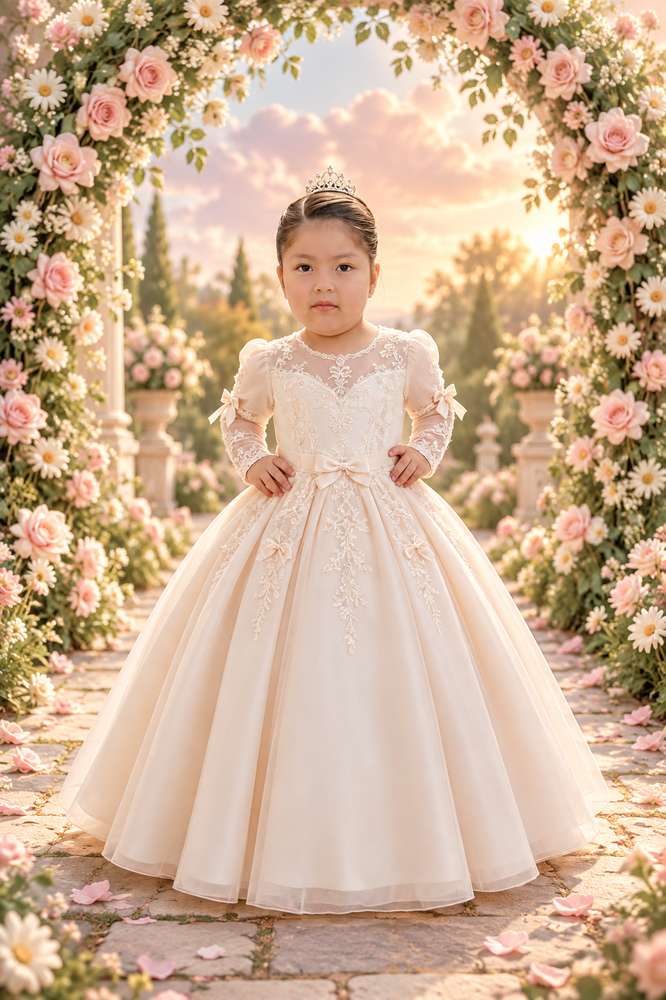

De bautizo
Ivan Rodrigo
Arroyo Navia
Para guiar mis pasos
con amor y fe.
UNA INVITACIÓN ENVIADA CON AMOR
Camilé Zendaya
Un día bendecido, un recuerdo para siempre.
CON LA BENDICIÓN DE DIOS
Hoy comienza mi camino de fe,
rodeada de amor y de quienes
llenan mi mundo de alegría.
Mi bautizo
Saca Arroyo

DE SUS MANOS, MIS PRIMEROS PASOS
Lizandro Saca Delgado
&Cinthia Arroyo Navia
Con el corazón lleno de gratitud, queremos compartir contigo la bendición del bautizo de nuestra hija.
GUARDA ESTE DÍA EN TU CORAZÓN
Sábado 14 de noviembre · 15:00
PERSONAS ESPECIALES EN MI CAMINO
Ivan Rodrigo
Arroyo Navia
Para guiar mis pasos
con amor y fe.
Gari Saca
NO SOLO CORTAS MI CABELLO HOY, SINO QUE SIGUES GUIANDO MIS PASOS SIEMPRE
DOS MOMENTOS, UNA MISMA ALEGRÍA
15:00
Parroquia San Miguel
de Tiquipaya
Sábado 14 de noviembre de 2026
Ubicación de la iglesia16:00
Salón de eventos
Avenida Ecológica, entre
Cucardas Norte y Daniel Salamanca
Que la luz de Dios ilumine mis pasos,
que su amor me acompañe siempre
y que este día viva en nuestros corazones.
TU PRESENCIA ES UN HERMOSO REGALO
Nos hará muy felices contar contigo.
Confirma tu asistencia y cuéntanos
cuántas personas te acompañarán.
Con mucho cariño, te esperamos.